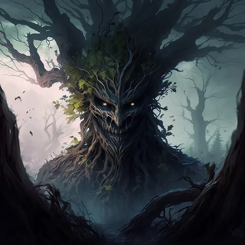
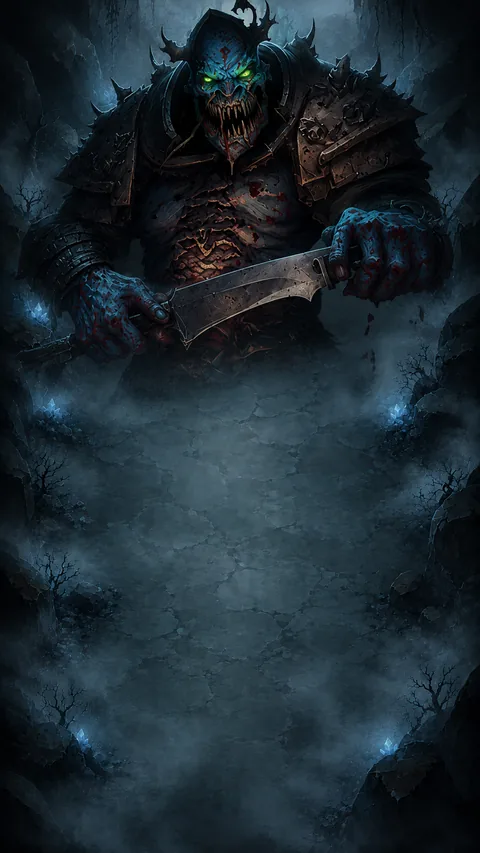
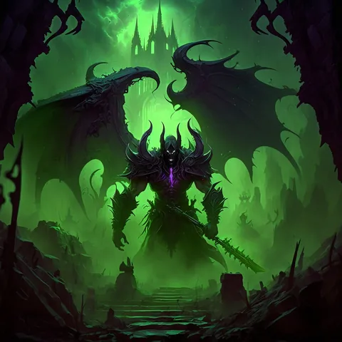
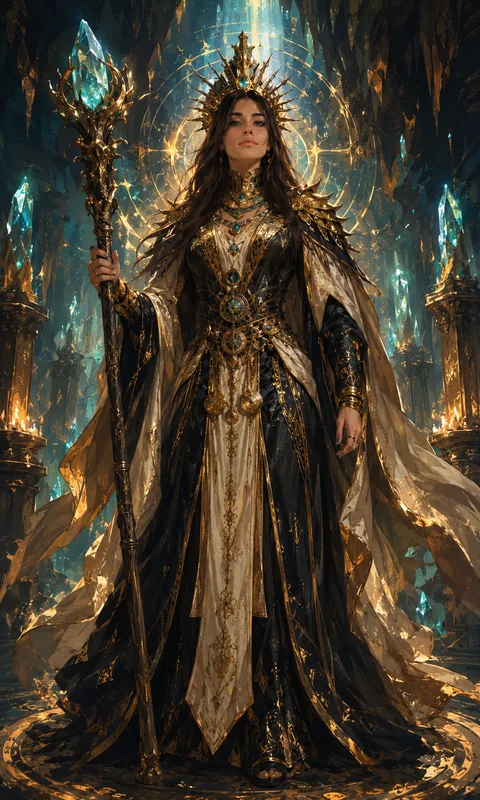
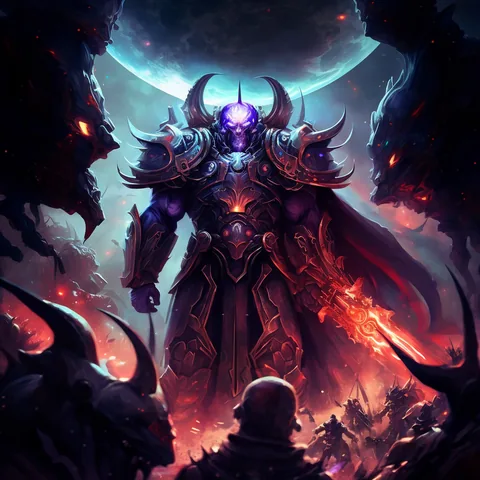
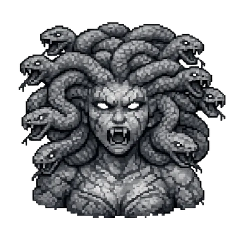

Com'è fatta una run
Si comincia componendo il mazzo: nove carte, di cui scegli solo il campione (il 10 della classe che indichi) e il vice (il 9) — le altre sette escono a caso, come spiegato in Come si gioca. Poi si entra, e da lì in avanti la run è una sequenza di stanze con una scelta a ogni passo: tre porte, e non sai cosa c'è dietro, a meno che tu non abbia un Detector in bisaccia.
| Stanza | Cosa succede | Esperienza |
|---|---|---|
| Mostri | Uno scontro: schieri tre carte contro tre della stanza. | 10 |
| Mercante | Due carte in vista, una coperta a prezzo ridotto, i consumabili, il banco per potenziare, quello per recuperare una carta caduta e quello per vendere. | — |
| Bottino | Consegna consumabili e una carta di riserva. | 10 |
| Prova lampo | Una sfida breve. Non dà esperienza di base, ma può pagare un premio di 50. | 0 / 50 |
| Miniboss — stanza 10 | Un avversario singolo più duro di una stanza normale. | 50 |
| Boss — stanza 20 | Il boss del capitolo. Batterlo chiude il capitolo. | — |
Il mazzo non resta quello di partenza: fra le stanze si compra dal mercante con l'oro raccolto combattendo, e può crescere fino a dodici carte. Una stanza di mostri paga dai 6 ai 24 pezzi d'oro secondo quanto è avanti la run e quanto era dura; un miniboss paga da 24 a 40.
I sei livelli, e perché la seconda metà è un altro gioco
Dentro la run si sale di livello con l'esperienza, e il livello fa una cosa sola ma enorme: cambia il dado.
| Livello | 1 | 2 | 3 | 4 | 5 | 6 |
|---|---|---|---|---|---|---|
| Vigore | D4 | D6 | D8 | D10 | D12 | D20 |
| Esperienza per il livello dopo | 50 | 75 | 100 | 125 | 150 | — |
Sono 500 punti di esperienza per arrivare in cima, e una stanza di mostri ne paga 10: il livello massimo non è una cosa che capita, è una cosa che si costruisce prendendo le stanze giuste. Il miniboss della stanza 10, da solo, ne vale cinque.
Il salto che conta. Fra il D12 e il D20 non c'è il D16: passare al sesto livello alza la media del tiro di quattro punti, mentre ogni altro livello ne alza uno. È anche il motivo per cui, arrivati là, ogni effetto che abbassa il dado di uno scalino diventa quattro volte più pericoloso di prima — il conto completo è in Strategia.
Nello stesso tempo cambiano gli avversari, in due modi. Il primo: la stanza pesca fra tre difficoltà, e i pesi si spostano man mano.
| Difficoltà | Potenza dello schieramento nemico | Carta più alta | Cosa fa il nemico |
|---|---|---|---|
| Accessibile | 6–20 | 8 | Usa abilità e mana, parte con 1 mana. |
| Normale | 6–25 | 9 | Come sopra, ma parte con 2 mana. |
| Diabolica | 24–30 | 10 | Parte con 4 mana e usa anche le supreme. In compenso lascia una carta come bottino. |
Nelle prime dieci stanze del primo capitolo le Diaboliche non escono affatto; dalla stanza 11 in poi compaiono, e più avanti è lo scenario più diventano la norma — nell'ultimo scenario della campagna, nella seconda metà della run, sono l'unica cosa che esce. Il secondo modo è più silenzioso: il livello dell'avversario cresce ogni cinque stanze, per conto suo, indipendentemente da quanta esperienza hai fatto tu. Restare indietro col livello non rallenta il gioco: lo rende più ripido.
I sette capitoli
La campagna è divisa in sette capitoli, e non sono sette varianti della stessa cosa: ognuno ha uno scenario, che è un ambiente con una regola sua, un boss alla fine e una classe in premio.
| Capitolo | Scenario | Boss | Classe in premio | Esperienza account | Stato |
|---|---|---|---|---|---|
| 1 · I Rampicanti di Trentor | Rampicanti | Trentor | Hunter | 100% | si gioca |
| 2 · La Nebbia di Bragus | Nebbia | Bragus | Barbarian | 120% | si gioca |
| 3 · L'Infestazione di Jurinashor | Infestata | Jurinashor | Necromancer | 140% | si gioca |
| 4 · La Luce di Seraphel | Illuminata | Seraphel | Paladin | 160% | si gioca |
| 5 | — | — | Assassin | 180% | in arrivo |
| 6 | — | — | Priest | 200% | in arrivo |
| 7 · La Cosmica di Palatir | Cosmica | Palatir | — (dadi cosmetici) | 250% | si gioca |
AcCard N' Die è in sviluppo. Tutti e sette i capitoli sono già scritti nel gioco con i loro identificativi definitivi, ma i boss del 5 e del 6 non ci sono ancora: nella schermata Avventura quei due capitoli si vedono segnati come in arrivo. Scenari, boss e premi dei capitoli mancanti possono ancora cambiare — quando cambiano, cambia anche questa pagina.
L'esperienza account: perché non è la stessa in tutti i capitoli
L'ultima colonna della tabella è la leva che rende la campagna una progressione invece di una collezione di boss. Una run giocata nel primo capitolo paga l'esperienza account al 100%; la stessa run nel settimo la paga al 250%. Battere un boss non apre solo il capitolo dopo: alza il ritmo di tutto quello che giocherai da lì in avanti, perché il livello account è quello che distribuisce i punti dell'albero dei talenti.
La prima uccisione del boss di un capitolo vale in più 3 punti talento, una tantum e non ripetibili: rigiocare un capitolo continua a dare esperienza, ma i punti li paga solo la prima volta. Sui sette capitoli fanno 21 punti, e sono la sola sorgente di punti che non dipende da quanto hai giocato.
Le classi in premio, e l'altra strada
Sei capitoli su sette consegnano una classe. Non è l'unico modo di averla: le classi si comprano anche al Santuario col miele, da 40 a 60 secondo la classe. Chi arriva in fondo al capitolo non paga; chi non ci arriva può prenderla dall'altare. Chi l'aveva già comprata non riceve niente e non perde niente.
Gli scenari: l'ambiente è una regola
Uno scenario non è uno sfondo. Ognuno porta un malus che vale per tutta la stanza e per tutta la run, e ognuno ha un solo boss associato: scoprire lo scenario significa sapere già chi ci sarà in fondo. Il gioco lo dice con un indizio, mai con un nome.
- Infestata — «I morti qui non rispondono solo a te.» L'abilità del Necromancer non funziona. È il capitolo che regala il Necromancer: lo vinci senza poterlo usare.
- Illuminata — «Nessuna lama resta nascosta sotto questa luce.»
- Specchi — «Ogni forza riflessa torna contro chi la mostra.» I Warrior non possono usare l'abilità.
- Esalazioni Tossiche — «L'aria corrompe ogni benedizione.» La benedizione del Priest scende a +1.
- Spettrale — «La rabbia non trova presa contro ciò che non ha carne.»
- Arcobaleno — «Il potere si spezza in colori imprevedibili.» Contro miniboss e boss l'unica aura che si accende è quella di Formazione.
- Nebbia — schieri tutte e tre le carte per primo, quindi l'avversario compone il suo schieramento sapendo già il tuo.
La grotta normale, che è lo scenario di default, non applica niente e pesca il boss finale dalla pool completa. Non tutti gli scenari qui sopra sono già assegnati a un capitolo: alcuni esistono come ambiente e aspettano il loro boss.
I boss
Un boss è una pedina sola contro le tue tre, e non è un mostro più grosso: ha un comportamento suo, e nel caso di Seraphel due fasi con due forme diverse.






Contro un boss cambiano due cose che altrove non contano. La prima: l'aura Hunter non consuma il marchio sui boss, quindi ogni attacco successivo se lo ritrova pronto — contro un boss l'Hunter smette di preparare e diventa un moltiplicatore permanente. La seconda: il nodo Sfidante dell'albero dei talenti dà Potenza in più al primo attacco di ogni scontro contro un boss o un miniboss, e in una run se ne incontrano due.
Cosa resta quando la run finisce
Le run finiscono, e finiscono spesso: il mazzo si perde e l'oro si perde. Quello che attraversa la morte è tutto fuori dalla run:
- L'esperienza account, moltiplicata per il capitolo in cui hai giocato.
- I punti talento che quei livelli hanno distribuito.
- Il capitolo sbloccato e la classe, se hai battuto il boss.
- I contatori che alimentano le quest della taverna — miniboss battuti, dadi tirati, abilità usate, oro guadagnato: sono quelli che poi diventano miele.
Il miele, invece, non arriva da qui: la fine di una run non ne paga, e l'unica fonte sono le quest giornaliere. È spiegato nel rifugio, insieme a dove si spende.
Da dove continuare
- Come si gioca — il regolamento completo.
- Strategia — cosa conviene fare, con i conti.
- Il rifugio — taverna, negozio, Santuario, talenti.
- I duelli online — l'altra modalità, con le stesse regole.